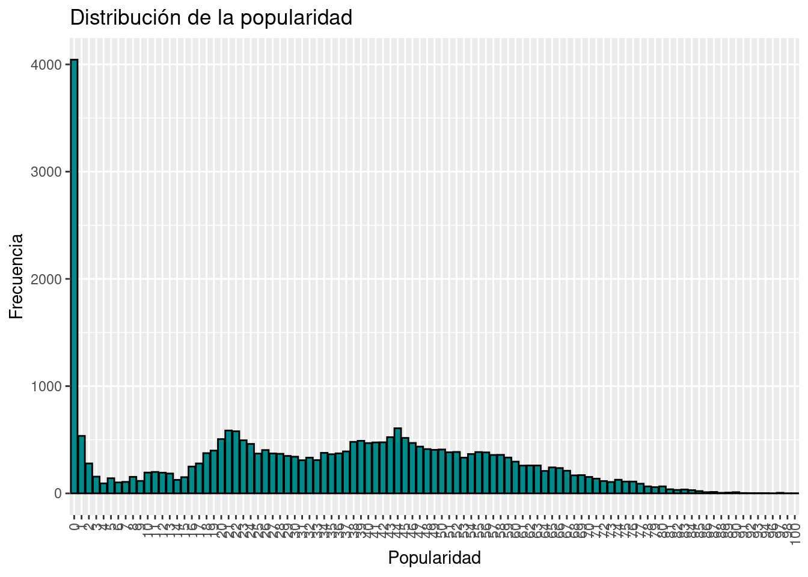
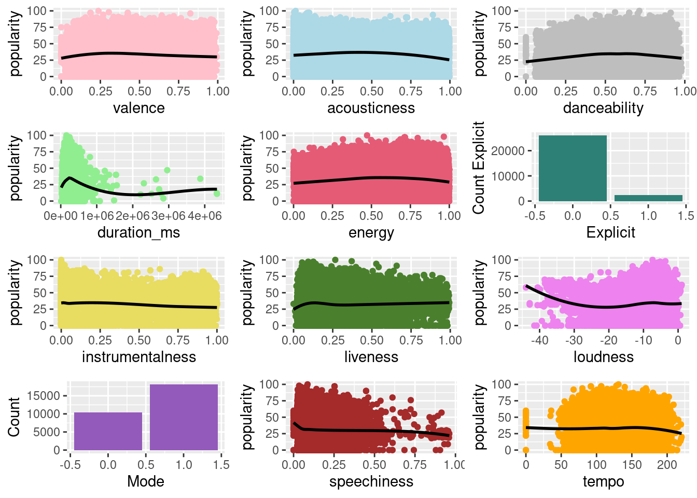

library(rstan)
library(ggplot2)
library(gridExtra)
library(tidyverse)
library(cmdstanr)
library(rsample)Anexos
Anexo 1: Limpieza y adecuación de datos
Muestra de los datos
datos <- read.csv("datos/datos.csv")
set.seed(35222)
data_split <- initial_split(datos, prop = .25)
datos <- training(data_split)Asignacion de valores numéricos a los géneros
datos$genre_factor <- factor(datos$track_genre)
generos_unicos <- levels(datos$genre_factor)
#Diccionario
diccionario_generos <- setNames(seq_along(generos_unicos), generos_unicos)
datos$genre_numeric <- diccionario_generos[datos$genre_factor]Asignación de valores numéricos al artista
datos$artists_factor <- factor(datos$artists)
artistas_unicos <- levels(datos$artists_factor)
#Diccionario
diccionario_artists <- setNames(seq_along(artistas_unicos), artistas_unicos)
datos$artists_numeric <- diccionario_artists[datos$artists_factor]Codificación numérica para explicita
datos <- transform(datos,
explicit = ifelse(explicit, 1, 0))Agregar media de popularidad por artista
- Obtenemos popularidad del artista mediante la media de sus popularidades
media_popularidad_por_artista <- aggregate(popularity ~ artists_numeric, data = datos, FUN = mean)
names(media_popularidad_por_artista)[2] <- "popularity_artist"
datos <- merge(datos, media_popularidad_por_artista, by = "artists_numeric", all.x = TRUE)Exploración de los datos
# popularidad
ggplot(datos, aes(x = factor(popularity))) +
geom_bar(fill = "darkcyan", color = "black") +
labs(x = "Popularidad", y = "Frecuencia", title = "Distribución de la popularidad") +
theme(axis.text.x = element_text(angle = 90, vjust = 0.5, hjust=1))
# Crear los gráficos individuales
plot_valence <-ggplot(datos, aes(x = valence, y = popularity)) +
geom_point(color="pink") +
geom_smooth(method = "loess", se = FALSE, color="black")
labs(x = "Valence", y = "Popularity")
plot_acousticness <- ggplot(datos, aes(x = acousticness, y = popularity)) +
geom_point(color="lightblue") +
geom_smooth(method = "loess", se = FALSE, color="black")
labs(x = "Acousticness", y = "Popularity")
plot_danceability <- ggplot(datos, aes(x = danceability, y = popularity)) +
geom_point(color="gray") +
geom_smooth(method = "loess", se = FALSE, color="black")
labs(x = "Danceability", y = "Popularity")
plot_duration <- ggplot(datos, aes(x = duration_ms, y = popularity)) +
geom_point(color="lightgreen") +
geom_smooth(method = "loess", se = FALSE, color="black")
labs(x = "Duration (ms)", y = "Popularity")
plot_energy <- ggplot(datos, aes(x = energy, y = popularity)) +
geom_point(color="#e55b76") +
geom_smooth(method = "loess", se = FALSE, color="black")
labs(x = "Energy", y = "Popularity")
plot_explicit <- ggplot(datos, aes(x = explicit, y = ..count..)) +
geom_bar(fill="#2d8076") +
labs(x = "Explicit", y = "Count Explicit")
plot_instrumentalness <- ggplot(datos, aes(x = instrumentalness, y = popularity)) +
geom_point(color="#e8dc61") +
geom_smooth(method = "loess", se = FALSE, color="black")
labs(x = "Instrumentalness", y = "Popularity")
plot_liveness <- ggplot(datos, aes(x = liveness, y = popularity)) +
geom_point(color="#4a802d") +
geom_smooth(method = "loess", se = FALSE, color="black")
labs(x = "Liveness", y = "Popularity")
plot_loudness <- ggplot(datos, aes(x = loudness, y = popularity)) +
geom_point(color="violet") +
geom_smooth(method = "loess", se = FALSE, color="black")
labs(x = "Loudness", y = "Popularity")
plot_mode <- ggplot(datos, aes(x = mode, y = ..count..)) +
geom_bar(fill="#945abb") +
labs(x = "Mode", y = "Count")
plot_speechiness <- ggplot(datos, aes(x = speechiness, y = popularity)) +
geom_point(color="brown") +
geom_smooth(method = "loess", se = FALSE, color="black")
labs(x = "Speechiness", y = "Popularity")
plot_tempo <- ggplot(datos, aes(x = tempo, y = popularity)) +
geom_point(color="orange") +
geom_smooth(method = "loess", se = FALSE, color="black")
labs(x = "Tempo", y = "Popularity")# Colocar los gráficos en un grid
grid.arrange(
plot_valence, plot_acousticness, plot_danceability, plot_duration, plot_energy,
plot_explicit, plot_instrumentalness, plot_liveness, plot_loudness, plot_mode,
plot_speechiness, plot_tempo,
nrow = 4, ncol = 3
)`geom_smooth()` using formula = 'y ~ x'
`geom_smooth()` using formula = 'y ~ x'
`geom_smooth()` using formula = 'y ~ x'
`geom_smooth()` using formula = 'y ~ x'
`geom_smooth()` using formula = 'y ~ x'Warning: The dot-dot notation (`..count..`) was deprecated in ggplot2 3.4.0.
ℹ Please use `after_stat(count)` instead.`geom_smooth()` using formula = 'y ~ x'
`geom_smooth()` using formula = 'y ~ x'
`geom_smooth()` using formula = 'y ~ x'
`geom_smooth()` using formula = 'y ~ x'
`geom_smooth()` using formula = 'y ~ x'
Selección de columnas
full_data <- datos
selected_datos <- datos[, c("popularity", "duration_ms","explicit","danceability","tempo","genre_numeric","popularity_artist")]
selected_datos$explicit <- as.integer(selected_datos$explicit)
selected_datos <- head(selected_datos,5000)
selected_datos_small <- head(selected_datos,50)Finalmente, guardamos los datos para su uso
write.csv(selected_datos, "./datos/selected_datos.csv", row.names=FALSE)
write.csv(selected_datos_small, "./datos/datos_small.csv", row.names=FALSE)
write.csv(datos, "./datos/muestra.csv", row.names=FALSE)Anexo 2: Modeos en cmdstan
modelo_homogeneo <- cmdstan_model("./proy_homogeneo.stan")
print(modelo_homogeneo)data {
int<lower=0> N; //número de canciones
vector[N] y; // popularidad de las canciones
int<lower=0> Nartist; // número de artistas
array[N] int artist; // id's artistas
}
// The parameters accepted by the model. Our model
// accepts two parameters 'mu' and 'sigma'.
parameters {
real mu; //promedio, se supone 50
real<lower=0> sigma; // varianza
}
model {
for (i in 1:N) {
y[i] ~ normal(mu, sigma); // verosimilitud
}
// y ~ normal(mu, sigma);
mu ~ normal(50,52);
sigma ~ exponential(0.048);
}
generated quantities {
vector[Nartist] mu_artist;
for (i in 1:Nartist) {
mu_artist[i] = normal_rng(mu, sigma);
}
}modelo_heterogeneo <- cmdstan_model("./proy_heterogeneo.stan")
print(modelo_heterogeneo)data {
int<lower=0> N; //número de canciones
vector[N] y; // popularidad de las canciones
int<lower=0> Nartist; // número de artistas
array[N] int artist;
}
// The parameters accepted by the model. Our model
// accepts two parameters 'mu' and 'sigma'.
parameters {
vector[Nartist] mu_artist; //promedio, se supone 50
real<lower=0> sigma;
}
model {
// Prior for artist popularity
mu_artist ~ normal(50, 52);
// Likelihood: Song popularity depends on artist popularity
for (i in 1:N) {
y[i] ~ normal(mu_artist[artist[i]], sigma);
}
// Prior for the common variance
sigma ~ exponential(1);
}modelo_jerarquico <- cmdstan_model("./proy_jerarquico.stan")
print(modelo_jerarquico)data {
int<lower=0> N; //número de canciones
vector[N] y; // popularidad de las canciones
int<lower=0> Nartist; // número de artistas
array[N] int artist;
}
// The parameters accepted by the model. Our model
// accepts two parameters 'mu' and 'sigma'.
parameters {
real mu; // Overall average popularity
real<lower=0> sigma_y; // Standard deviation of song popularity
real<lower=0> sigma_mu; // Standard deviation of artist popularity deviations
vector[Nartist] b; // Artist-specific deviations from average popularity
}
transformed parameters {
vector[Nartist] mu_artist; // Mean popularity for each artist
for (j in 1:Nartist) {
mu_artist[j] = mu + b[j];
}
}
model {
// Priors
mu ~ normal(50, 52); // Prior for overall average popularity
b ~ normal(0, sigma_mu); // Prior for artist-specific deviations
sigma_y ~ exponential(0.048); // Prior for song popularity variance
sigma_mu ~ exponential(1); // Prior for artist popularity deviation variance
// Likelihood
for (i in 1:N) {
y[i] ~ normal(mu_artist[artist[i]], sigma_y);
}
}